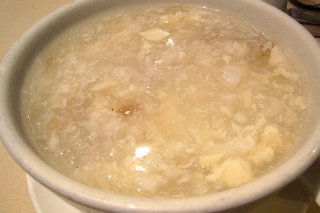

Sopa de pan de mi abuela

Description
My now-gone grandma used to cook this for me when I was sick. It is a very simple recipe, also known as garlic soup or bread soup. The garlic in the soup and the green onions just give it a fortifying flavor to those in need. I miss you grandma. I love you.
Ingredients
- Old, hard bread
- Water
- Garlic
- Green onions
- Olive oil
- Black pepper and salt to taste
Steps
- Peel and chop the green onions. Peel and crush the garlic cloves. Set aside.
- Add some oil to a soup pan. Use medium fire. Add the chopped onions. Wait until the onions are transparent before adding the garlic.
- AOnce the garlic has turned aromatic, add hot water slowly but without doubting. Add some salt and test the flavor of this broth.
- Add the old bread at this point, piece by piece. The bread must become wet and mix with the broth completely. Once you had added all the bread, turn the fire to low.
- Wait for ten minutes, check the salt, and add some pepper if yo want to have a bit of spice to it.
- Serve it hot and remember that someone loves you.